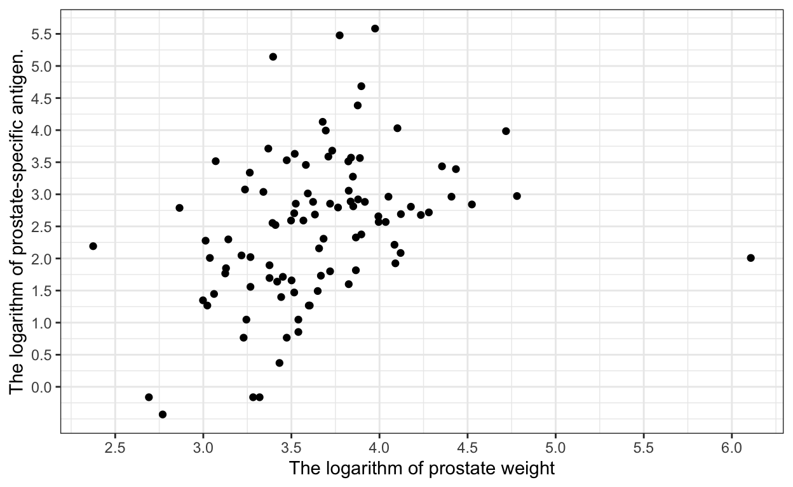
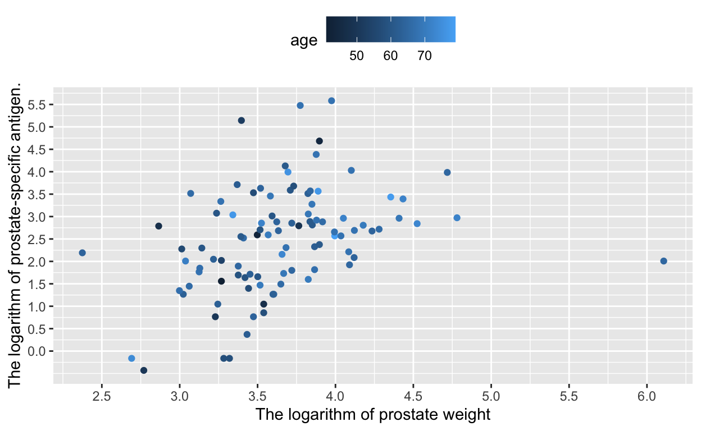
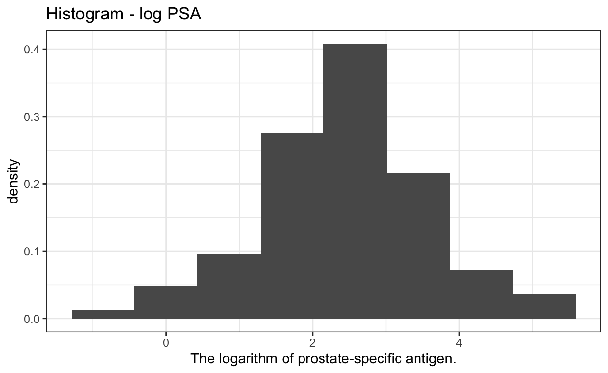
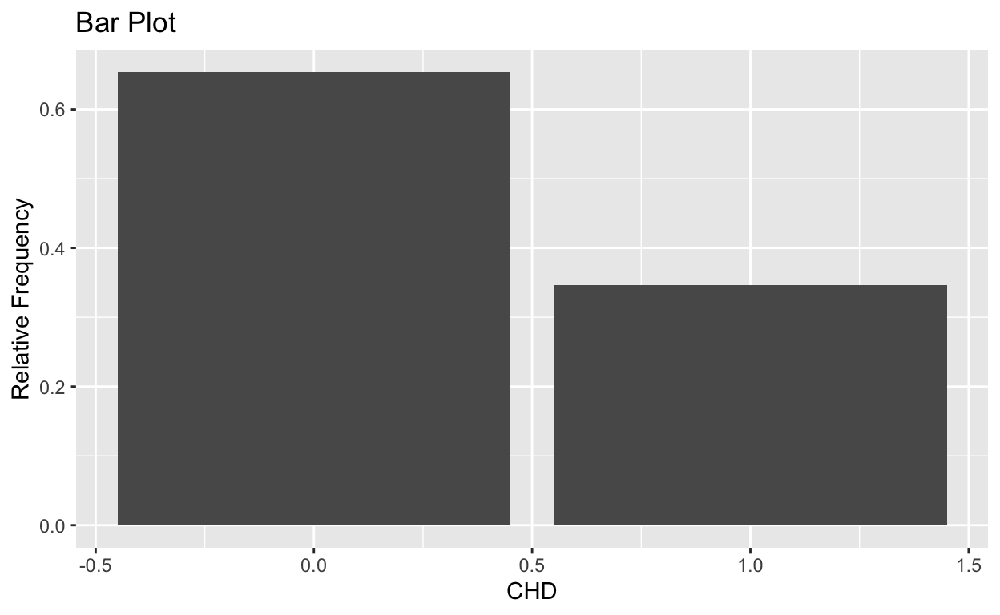
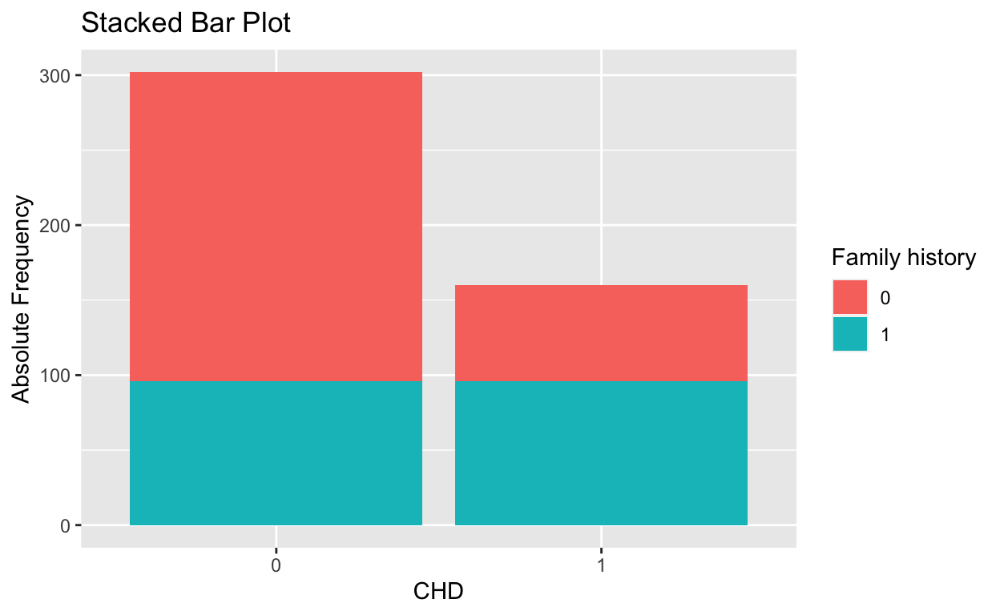
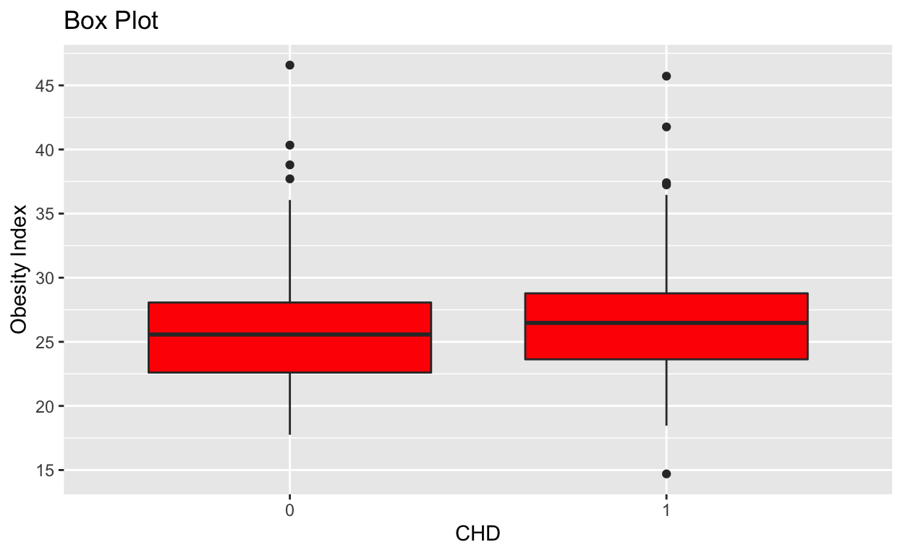

ggplot2.
dplyr.
Before reading any data, you must set the R working directory to the location of the data.
setwd(“…”) will set the current working directory to a specific location
getwd() will print out the current directory.
> setwd("C:/mydata") (Windows)
When specifying the pathname, R reads forward slashes, whereas Windows reads backward slashes. Definition of the path can be found at path
Setting the working directory properly can eliminate path confusion.
Source: SAMHDA
Space-Delimited or Tab - Delimited
Function: read.table()
Common Parameters:
File: the name of the file which the data are to be read from.
Header: TRUE when first row includes variable names. The default is FALSE.
Sep: A string indicating what is separating the data. The default is " ".
'> dataSPACE <-read.table("C:/mydata/survey.dat", header=TRUE, sep= " ")'
or
'> dataSPACE <-read.table("C:/mydata/survey.txt", header=TRUE, sep= " ")'
read.csv() reads comma delimited files,
read.csv2() reads semicolon separated files (common in countries where , is used as the decimal place).
However, we are going to use tidyverse packages to import data.
Most of readr’s functions are concerned with turning flat files into data frames:
read_csv() reads comma delimited files,
read_csv2() reads semicolon separated files (common in countries where , is used as the decimal place),
read_tsv() reads tab delimited files, and read_delim() reads in files with any delimiter.
There are other functions such as: read_fwf(), read_log(), however we are going focus on read_csv().
library(tidyverse)
x = read_csv("teste.csv")
head(x)This section is based on R for Data Science, section 5.6.
R has several systems for making graphs, but ggplot2 is one of the most elegant, efficient and versatile.
There are many ways to make a data visualization, here we are going to focus on 4 basic representation types:
Source: Rbloggers.
We use the scatter Plot to see the relationship between two continuous variables.
Continuous variables are numeric variables that can assume values on an uncountable set.
The data came from a study by Stamey et al. (1989). They examined the correlation between the level of prostate-specific antigen and a number of clinical measures in men who were about to receive a radical prostatectomy.
Here, we are going to analyze the relationship between the logarithm of prostate weight and logarithm of prostate-specific antigen..
library(Brq)
data("Prostate")
ggplot(Prostate, aes(x=lweight, y=lpsa)) + geom_point() +
scale_x_continuous("The logarithm of prostate weight", breaks = seq(0,6,by = 0.5))+
scale_y_continuous("The logarithm of prostate-specific antigen.", breaks = seq(0,6,by = 0.5))+
theme_bw()
library(Brq)
data("Prostate")
ggplot(Prostate, aes(x=lweight, y=lpsa, color=age)) + geom_point() +
scale_x_continuous("The logarithm of prostate weight", breaks = seq(0,6,by = 0.5))+
scale_y_continuous("The logarithm of prostate-specific antigen.", breaks = seq(0,6,by = 0.5))+ theme(legend.position="top")
The histogram consists of breaks the data into bins and computes the frequency distribution of them. We can modify the bin size and see what happens.
There are some rules to define the number of bins available in the literature.
By default, geom_histogram() will divide your data into 30 equal bins or intervals.
However, usually, the solution is ad hoc based on the experience of the statistician. Here, we are going to use the Sturges's Rule references
nbins = nclass.Sturges(Prostate$lpsa)
ggplot(Prostate, aes(lpsa)) + geom_histogram(bins=nbins, aes(y=..density..))+labs(title = "Histogram - log PSA") +xlab("The logarithm of prostate-specific antigen.") + theme_bw()
The data is a subset of the Coronary Risk-Factor Study (CORIS) baseline survey, carried out in three rural areas of the Western Cape, South Africa (Rousseauw et al., 1983).
The aim of the study was to establish the intensity of ischemic heart disease risk factors in that high-incidence region.
Here we are going to investigate the frequency distribution of the variable coronary heart disease (CHD).
#install.packages("MCMCpack")
#install.packages("tmvtnorm")
#install.packages("MixCluster", repos="http://R-Forge.R-project.org")
library(MixCluster)
data("saheart")
ggplot(data=as.data.frame(saheart), aes(x=CHD)) +
geom_bar(aes(y = ..count../ sum(..count..))) + labs(title="Bar Plot") +
ylab("Relative Frequency")
More details can be found at STDHA.
saheart = as.data.frame(saheart) %>% mutate(
Famhist = factor(Famhist),
CHD = factor(CHD)
)
ggplot(data=saheart, aes(x=CHD, fill = Famhist)) +
geom_bar() +
labs(title="Stacked Bar Plot", x = "CHD", y="Absolute Frequency") +
scale_fill_discrete(name = "Family history", labels = c("0", "1"))
We use Box Plot to visualize the spread of the data and detect outliers. Also, we can use the Box Plot to make comparisons. Here we are going to compare the Obesity between groups with the presence of the CHD against the group with individuals who never had CHD.
ggplot(saheart, aes(CHD, Obesity)) + geom_boxplot(fill = "red")+
scale_y_continuous("Obesity Index", breaks= seq(0,50, by=5))+
labs(title = "Box Plot", x = "CHD")
This section is strongly based on R for Data Science
filter() lets you use a logical test to extract specific rows from a data frame. To use filter(), pass it the data frame followed by one or more logical tests. filter() will return every row that passes each logical test.
So we can use filter() to select every individual which has a coronary heart disease. Click Submit Answer to give it a try:
filter(saheart, CHD == 1)arrange() works similarly to filter() except that instead of selecting rows, it changes their order. It takes a data frame and a set of column names (or more complicated expressions) to order by. If you provide more than one column name, each additional column will be used to break ties in the values of preceding columns:
So we can use arrange() to order the Prostate dataset by lcavol, lweight ,and age. Click Submit Answer to give it a try:
arrange(Prostate, lcavol, lweight, age)Use desc to re-order by a column in descending order:
arrange(Prostate, desc(age))select() allows you to rapidly zoom in on a useful subset using operations based on the names of the variables.
For example, we can use select() to select the columns lcavol, lweight, age
arrange(Prostate, lcavol, lweight, age)The function select() have many arguments:
everything(): Matches all variables.
last_col(): Select last variable, possibly with an offset.
These helpers select variables by matching patterns in their names:
starts_with(): Starts with a prefix.
ends_with(): Ends with a suffix.
contains(): Contains a literal string.
matches(): Matches a regular expression.
Further details can be found at documentation of the function.
Besides selecting sets of existing columns, it’s often useful to add new columns that are functions of existing columns. That’s the job of mutate().
We can use mutate() to compute the level of the prostate-specific antigen.
mutate(Prostate, psa = exp(lpsa))summarise() collapses a data frame to a single row of summaries. You get to choose how many summaries appear in the row and how they are computed:
summarise() is not terribly useful unless you pair it with group_by().
group_by() assigns groups by grouping together observations that have the same combinations of values for the variables that you pass to group_by().
Prostate %>% summarise( lpsa_ave = mean(lpsa, na.rm=TRUE),
lpsa_sum = sum(lpsa, na.rm=TRUE))Prostate %>% summarise_all(list(sum, mean))saheart %>% group_by(CHD) %>% summarise(mean(Ldl), n=n())saheart %>% group_by(CHD,Famhist) %>% summarise(n())Further details can be found at documentation.
To practice these skills, we will use the flights data set from the nycflights13 package. This data frame comes from the US Bureau of Transportation Statistics and contains all 336,776 flights that departed from New York City in 2013. It is documented in ?flights.
Sort flights to find the most delayed flights.
library(nycflights13)arrange(flights, -arr_delay) Find the flights that left earliest.
arrange(flights, dep_delay) Add a new variable called speed (in seconds) in the dataset flight.
flights %>% mutate(speed = distance / (air_time * 60))When do the first and last flights leave each day? You must use the object not_cancelled to do th exercise.
not_cancelled = flights %>%
filter(!is.na(dep_delay), !is.na(arr_delay)) not_cancelled %>%
group_by(year, month, day) %>%
summarise(
first = min(dep_time),
last = max(dep_time)
)